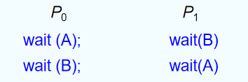
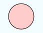
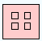
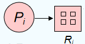
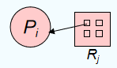
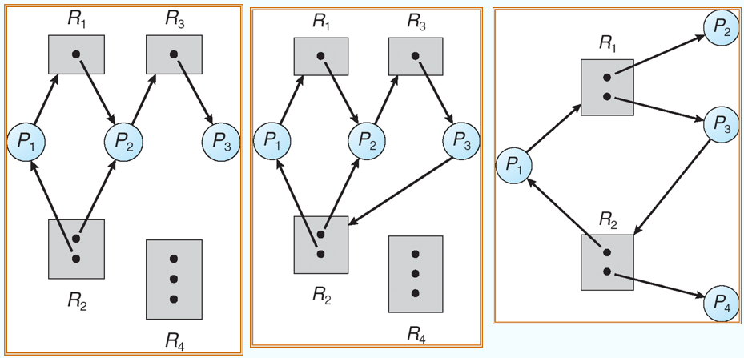
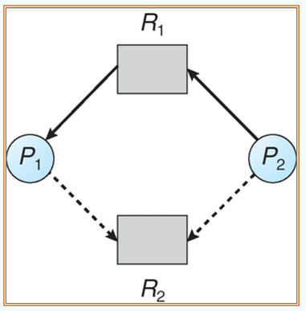
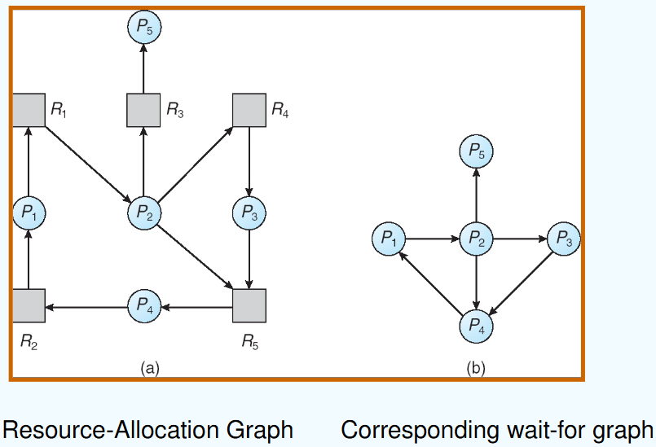

Deadlocks
约 3167 个字 8 张图片 预计阅读时间 21 分钟
死锁问题
过桥问题
- 桥是单向通行的。当桥的两侧都希望使用桥时，就会出现死锁。
- 当出现死锁问题时，只需要桥上的某个方向的车往后退就可以解决死锁问题。
- 当出现死锁时，所有的车就被阻塞，需要等待。
- 可能会导致饥饿问题。
四向车道问题
- 在一个十字路口，当有多个方向来车时，让自己右侧的车辆先走。
- 当四个方向同时来车时，就会出现死锁问题。
死锁问题定义
- A set of blocked processes each holding a resource and waiting to acquire a resource held by another process in the set.(教材上的定义)
- 指多个进程因竞争共享资源而造成相互等待的一种僵局，若无外力作用，这些进程都将永远不能再向前推进。(中文定义)
一个典型例子
系统有两个磁盘，P1 和 P2 各自拥有一个磁盘，并且都在等待对方的磁盘。
另一个典型例子

系统模型
产生死锁的四个必要条件
- Mutual exclusion(互斥条件): only one process at a time can use a resource.
- Hold and wait(请求并保持条件): a process holding at least one resource is waiting to acquire additional resources held by other processes.(单个进程在占有资源的同时又在请求新的资源)
- No preemption(不剥夺条件): a resource can be released only voluntarily by the process holding it, after that process has completed its task.(当某个进程获得某个具体的资源之后不会强行剥夺，进程执行完之后才会释放资源)
- Circular wait(循环等待/环路等待条件): there exists a set {P0, P1, …, Pn} of waiting processes such that P0 is waiting for a resource that is held by P1, P1 is waiting for a resource that is held by P2, …, Pn–1 is waiting for a resource that is held by Pn, and Pn is waiting for a resource that is held by P0.
System model
- 不同种类的资源(CPU, IO, memory space)
- 每一种资源(resource)都有不同的实例(instance)
- 每个进程使用的资源如下所示
- request
- use
- release
死锁特征
资源分配图
一个包含了点和边的图
- 点分为两种类型
- P = {P1, P2, ..., Pn}，包含了所有程序中进程的集合
- R = {R1, R2, ..., Rm}，包含了所有程序中资源的集合
- request 边
- 有向边 Pi → Rj (表示进程 i 正在等待或者请求资源 j)
- assignment 边
- 有向边 Rj → Pi (表示资源 j 正在被进程 i 占用)
图形表示
- 进程
 - 具有4个 instance 的资源
 - 正在等待资源 j 的进程 i
 - 正占用资源 j 的进程 i

3个示例

- 第一张图不会出现死锁的情况
- 第二张图因为出现了循环等待，所以可能出现死锁
- 第三张图不会出现死锁(P1 → P2 → P3 → P1)
死锁与环路的关系
- 当图中没有出现环路时，不会出现死锁
- 当图中出现环路时
- 如果一种资源类型只有一个 instance，那么就会产生死锁
- 如果一种资源类型不止一个 instance，可能会产生死锁(如果环路上的所有资源都被这个环路上的进程占据，就会进入死锁)
处理死锁的方法
- 死锁预防(Prevention)、死锁避免(Avoidance)
- 确保系统不会进入死锁的状态
- 死锁检测(Detection)、死锁解除(Recovery)
- 允许系统进入死锁状态，但是当进入死锁时，能够从死锁状态恢复
- 鸵鸟算法
- 忽视系统中存在的死锁问题，认为它们不存在
鸵鸟算法被大多数操作系统系统使用，比如 UNIX, Linux, Windows
为什么要使用鸵鸟算法？
操作系统的目的是为用户服务，运行用户程序的时间更多，而前面两种运行的代价比较大，影响系统的实时性，在实际应用中的可行度较低。
死锁预防
定义
通过破坏产生死锁的必要条件之一来防止死锁的发生。
逐一条件分析
- 互斥条件：如果将只能互斥使用的资源改造为允许共享使用，那么系统不会进入死锁状态。但有些资源根本不能同时访问，所以这种方法不可行(有些教材上说可以通过虚拟技术实现？)
- 破坏请求并保持条件：分为两个点，分别从 hold 和 wait 两个角度考虑
- hold：只允许进程在没有资源时请求资源，不能够在占用资源的时候再次请求资源
- wait：进程请求资源的时候，一次性把它需要的所有资源都给它，这样进程就不会再等待资源
- 存在的问题：资源浪费，并且可能导致饥饿问题。
- 破坏不可剥夺条件：持有的资源可以被剥夺
- 如果持有某些资源的进程请求另一个不能立即分配给它的资源，那么当前持有的所有资源都将被释放
- 被抢占的资源被添加到进程正在等待的资源列表中
- 只有当进程能够重新获得其旧资源以及正在请求的新资源时，进程才会重新启动
- 破坏循环等待条件：对资源的分配安排一个顺序，并且进程申请资源的时候必须从小到大申请
- 强加所有资源类型的总顺序，并要求每个进程以递增的枚举顺序请求资源
- 存在的问题：资源的顺序不好确定，不同类型进程使用资源的顺序不一样
这4种方法在实际情况下一般都不可行
死锁避免
定义
通过动态检测资源分配的安全性，确保系统不会进入不安全状态。也就是说在分配资源给进程之前进行检查，确保分配之后系统不会进入不安全状态。
大概思想
- 要求每个进程声明它可能需要的每种类型的最大资源数量。
- 死锁避免算法动态检查资源分配状态，以确保永远不会出现循环等待条件。
- 资源分配状态由可用资源和已分配资源的数量以及进程的最大需求来定义。
安全状态
如果存在所有进程的 \(<P_1, P_2，…，P_n>\) 序列，使得对于每个 Pi， Pi 仍然可以请求的资源可以由当前可用资源 + 所有 Pj 持有的资源来满足，且 j < i，则系统处于安全状态。(系统空闲的资源以及进程 Pi 前面的所有进程已经占用的资源总和能够确保进程 Pi 顺利执行完成)
死锁和安全状态的关系
- 如果系统处于安全状态，就一定没有死锁
- 如果系统不处于安全状态，可能产生死锁
确保系统永远不会进入不安全状态
避免算法
- 一种资源只有单个实例 -- 使用资源分配图
- 一种资源具有多个实例 -- 银行家算法
资源分配图
- Claim egde Pi → Rj 表示进程 Pi 可能请求资源 Rj，用虚线表示
- 当请求资源时，claim edge 转化成 request edge
- 当资源分配后，request edge 转化成 assignment edge
- 释放资源后，assignment edge 转化成 claim edge
- 资源必须在系统中预先声明
通过查看资源分配图中有没有环(包括实线和虚线)来判断是不是安全状态(死锁避免)
示例

当 P2 发出 request 请求时，就要阻断它，否则就是不安全状态，可能导致死锁。
银行家算法
前提假设
- 资源具有多个实例
- 每个过程必须申明自己的最大使用量
- 当进程请求资源时，它可能需要等待
- 当一个进程获得它所有的资源时，它必须在有限的时间内返回它们
数据结构
一共有 n 个进程，m 种资源类型
- Available：如果Available[j] = k，表示资源 Rj 有 k 个资源实例
- Max：Max[i，j] = k，表示进程 Pi 最多需要请求 k 个资源 Rj 的实例
- Allocation：Allocation[i，j] = k，表示进程 Pi 已经被分配到 k 个资源 Rj 实例
- Need：Need[i，j] = k，表示进程 Pi 还需要 k 个资源 Rj 实例
具体算法
- Work 和 Finish 分别是长度为 m 和 n 的数据，并且进行初始化
\(Work = Available\)
\(Finish[i] = false~for~i = 0, 1, ..., n-1\) - 找到一个 i 满足：
(a) \(Finish[i] = false\)
(b) \(Need_i\le Work\)
如果不存在满足条件的 i，就跳到第4步 - \(Work = Work + Allocation_i\)
\(Finish[i] = true\)
跳到第2步 - 如果对于所有的 i 都满足 Finish[i] == true，那么系统处于安全状态
进程 Pi 的资源请求算法
- \(Request_i[j]≤Need[i,j]\),则转向步骤2;否则认为出错,因为它所需要的资源数已超过它所宣布的最大值。
- \(Request_i[j]≤Available[j]\),则转向步骤3;否则,表示尚无足够资源,\(P_i\) 必须等待。
- 系统试探着将资源分配给进程 P,并修改下面数据结构中的数值: $$ Available= Available-Request_i; $$ $$ Allocation[i,j]=Allocation[i,j]+Request_i[j]: $$ $$ Need[i,j]=Need[i,j]-Request-i[j] $$
- 系统执行安全性算法,检查此次资源分配后,系统是否处于安全状态。若安全,才正式将资源分配给进程 P,以完成本次分配；否则,将本次的试探分配作废,恢复原来的资源分配状态,让进程 P 等待。
死锁检测
死锁检测使用的算法与死锁避免使用的算法类似，同样是在一种资源类型只具有一个实例的时候使用资源分配图，在一种资源具有多个实例的时候使用类似于银行家算法的算法。
wait-for 图
使用于一个资源类型只有单个实例的情况中，在图中检测循环需要进行 \(n^2\) 次操作，其中 n 是图中顶点的数量。
将 Resource-Allocation 图转化为 Wait-for 图

简单来说，就是将资源的等待和使用条件简化为进程之间的等待条件。一个进程等待另外一个进程正在使用的资源，就认为这个进程正在等待使用资源的进程。
多实例的算法
- 数据结构
- Available：长度为 m 的数组，表示每一种资源还可使用的实例数量
- Allocation：一个 n*m 的矩阵，表示每一个进程已经分配到的资源的实例数量
- Request：一个 n*m 的矩阵，表示每一个进程当前正在请求资源实例的数量，\(Request[i_j]=k\) 表示进程 Pi 正在请求资源 Rj 的 k 个实例对象
- 算法步骤
- Let Work and Finish be vectors of length m and n, respectively Initialize:
(a) \(Work = Available\)
(b) For i = 1,2, ..., n, if \(Allocation_i\ne 0\), then \(Finish[i] = false\); otherwise, \(Finish[i] = true\). - Find an index i such that both:
(a) \(Finish[i] == false\)
(b) \(Request_i\le Work\)
If no such i exists, go to step 4. - \(Work = Work + Allocation_i\)
\(Finish[i] = true\)
go to step 2. - If \(Finish[i] == false\), for some i, \(1\le i\le n\), then the system is in deadlock state. Moreover, if \(Finish[i] == false\), then Pi is deadlocked.
- Let Work and Finish be vectors of length m and n, respectively Initialize:
可完全化简图
能消去图中所有边，能则称为可完全化简图
- 过程
- 找出一个既不阻塞又非独立的进程结点P
- 在顺利的情况下，分配给其资源让其完成，消去所有边变成孤立点
- 循环上述两步操作，直至消去所有边，代表无死锁。
检测算法的使用
调用的时间和频率取决于
- 可能发生死锁的频率
- 需要回滚多少个进程
如果任意调用检测算法，在资源图中可能会有很多循环，因此我们将无法判断是哪个死锁进程导致了死锁。
死锁恢复
- 资源剥夺法
- 把部分进程挂起，剥夺其资源并分配给其他的死锁进程
- 撤销进程法
- 撤销部分甚至全部死锁进程，释放资源
- 进程回退法
- 让一个进程或多个进程回退到避免死锁的地步，释放中间资源。需要系统保持进程的历史信息，设置还原点。
依据: 进程的优先级、已执行时间、剩余时间、已用资源、交互还是批处理等